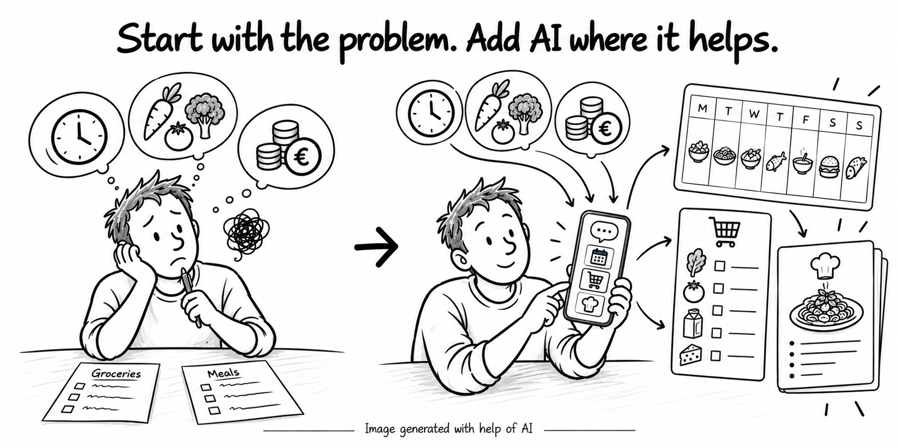

What building a meal planner taught me about where AI actually creates value — and where it simply gets in the way.

When I started building my MealMate app, my main question was simple:
Could I use AI to make weekly meal planning easier?
The obvious answer was to use AI to generate meals, recipes and ingredients.
But as I started using the application, I realized that the real problem wasn't simply creating meals with AI.
Planning meals involves many small human decisions: add something, change it, remove it, find an alternative, explore an idea and choose what works.
I didn't want AI to get in the way of those decisions.
My first versions were too eager to use AI.
Changing a meal could trigger recipe and ingredient generation. The application was trying to do too much, too early.
I realized that planning and enrichment are two different problems.
Planning should be fast and lightweight:
Once the plan is ready, AI can do the heavier work: generating recipes and ingredients.
This led to a much simpler flow:
PLAN → decide
GENERATE → enrich
SHOP → buy
COOK → execute
AI became part of the workflow — not the workflow itself.
It's easy to ask: “Where can I add AI?”
A better question is: “Where does AI actually remove friction or create value?”
Sometimes the answer is AI. Sometimes the best solution is simply a fast, deterministic interaction.
One of my biggest technical learnings was the importance of context.
Before asking AI to act, MealMate builds the relevant context: the current request, meal and slot, conversation, preferences and dietary constraints.
The AI model is therefore only one component of a larger context pipeline.
AI is not the product.
The user's problem is the product.
AI should step in where it improves the experience — and stay out of the way when it doesn't.
Start with the problem. Add AI where it helps.
Project started: September 2026